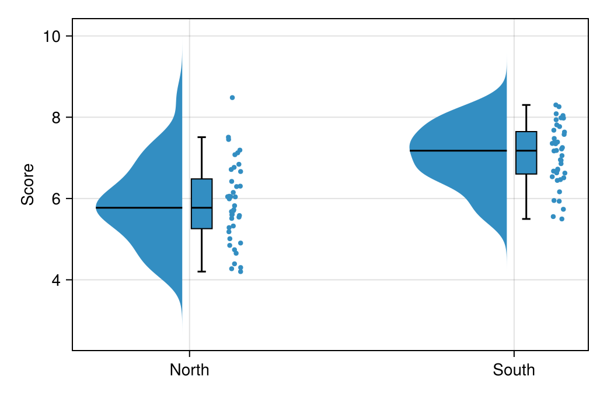

rainclouds!
A rainclouds! plot has three parts, and masque(fig) makes each one respond on its own: the raindrops, one per observation, the violins and the boxes. Hover each part below, then click one:
Notebook as text
using Masque, CairoMakie, Randombegin
rng = Xoshiro(3)
region = repeat(["North", "South"]; inner = 40)
scores = [randn(rng, 40) .+ 6; randn(rng, 40) .+ 7]
fig = Figure(size = (520, 340))
ax = Axis(fig[1, 1]; xticks = (1:2, ["North", "South"]), ylabel = "Score")
rc = rainclouds!(ax, region, scores; markersize = 6)
nothing
end@bind sel masque(fig)
selWhat a click returns
Each part has its own field in the @bind value, named after the kind of plot it is:
| Part | Its field | One mark is | Fields | Order of the marks |
|---|---|---|---|---|
| raindrops | sel.scatter | one observation | index, x, y | the order of your data |
| violins | sel.violin | one violin per category | index, x (the category's place on the axis, 1 for the first) | left to right |
| boxes | sel.boxplot | one box per category | index, x, q1, median, q3 | left to right |
A raindrop's index is its position in your data, so scores[sel.scatter.index] is its value. Its x is where it is drawn, a little to the side of its category, with some random spread. With strings as categories, each category takes its place where it first appears in your data, so here "North" is on the left.
When the figure has a scatter! of its own, the raindrops take the next free id, sel.scatter_2. To keep the three parts under one name, give the plot an id, and a click on a violin is then sel.rain.violin:
@bind sel masque(fig, interactables(rc; id = :rain))Show your own data
Each part takes its own payloads, so payloads names the part each list is for: one entry per observation for the raindrops, and one per category for the violins and the boxes. A part you leave out keeps its default fields:
Notebook as text
begin
students = [(student = "S$(i)",) for i in 1:80]
regions = [(region = "North", schools = 4), (region = "South", schools = 6)]
masque(fig, interactables(rc; payloads = (scatter = students, violin = regions)))
endHovering a raindrop now shows its student, and hovering a violin shows its region and number of schools. The boxes still show their quartiles. A tooltip template you pass applies to every part. To give one part its own, key it by the part's name, tooltip = (scatter = masque"…",); the parts you leave out keep their default tooltips.
Select several raindrops
To select a group of observations, pass select = :many, then click raindrops one at a time:
Each part's field is then a vector of events. See Select several marks.
Supported axes
rainclouds! works on a 2D Axis.
Where to go next
The violins and boxes of a raincloud work as violin! and boxplot! do on their own.